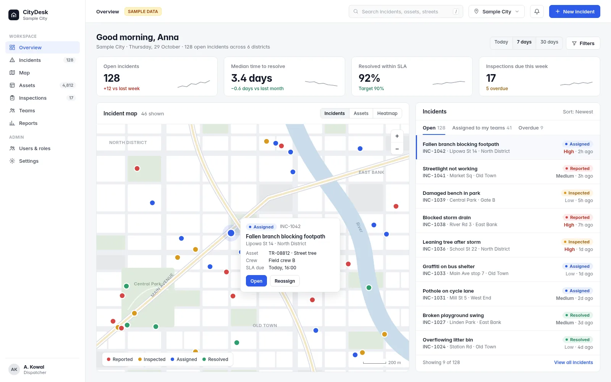
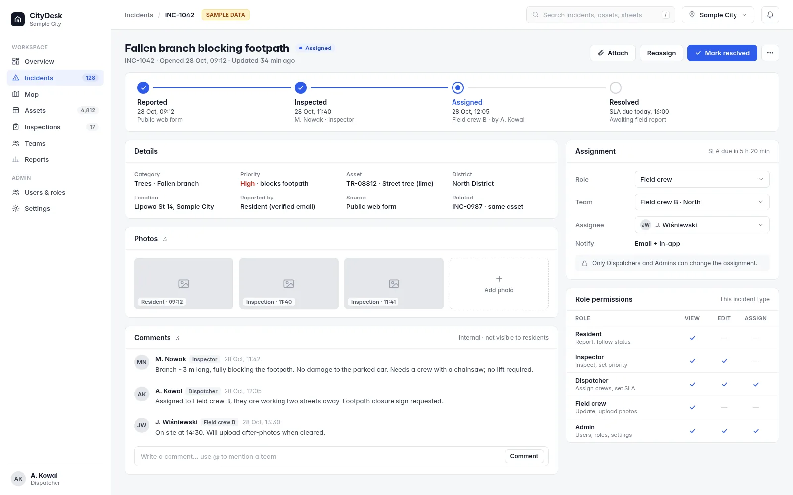
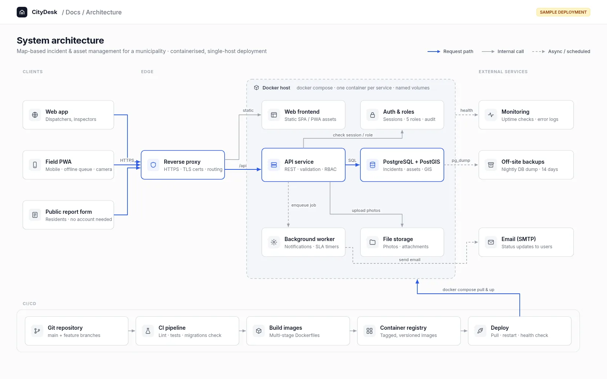

Websites & landing pages
Fast, responsive pages with clean code, good SEO basics and no unnecessary weight.
Web developer · Germany
I'm Ivan, a web developer in Germany. I build fast websites and MVPs, deploy them with Docker and put them live with HTTPS. I also translate between Russian, Polish, English and German.
Hire me on FiverrServices
Small, focused projects with a clear result: a site or app that works, runs on your server and is easy to maintain.
Fast, responsive pages with clean code, good SEO basics and no unnecessary weight.
Dashboards, forms, user roles and admin tools. A working first version you can show and test.
Docker setup, domain, HTTPS and a server that is configured properly, so your project is live and stays live.
Accurate, proofread translation between Russian, Polish, English and German. Not certified.
Work
Most client work is under confidentiality. This case is shown with a redesigned interface and sample data.
Commissioned web app for municipalities, currently in closed beta. Interactive map, incident workflow with roles, admin tools, Dockerized deployment. Shown as a redesigned interface mockup with fictional name and data to protect client confidentiality.



How I work
You always know what you get, what it costs and where the project stands.
We agree on what will be built and what it costs before any work starts.
You see progress along the way and can give feedback early, not only at the end.
The project goes live, and you get the full source code and the information to run it.
Contact
The fastest way to reach me is Fiverr.